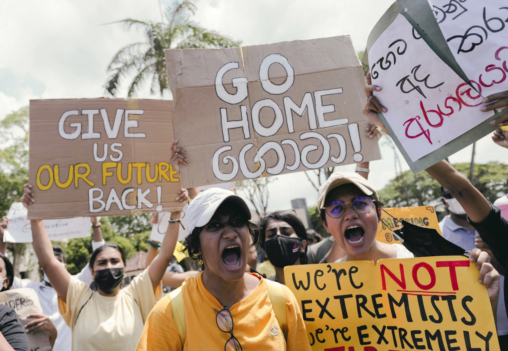
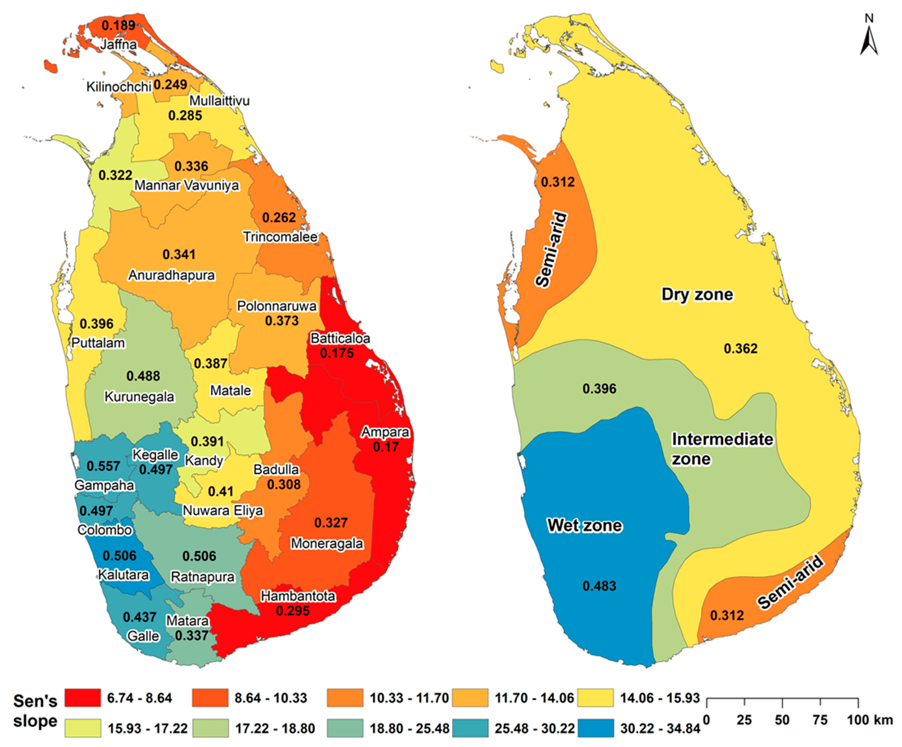
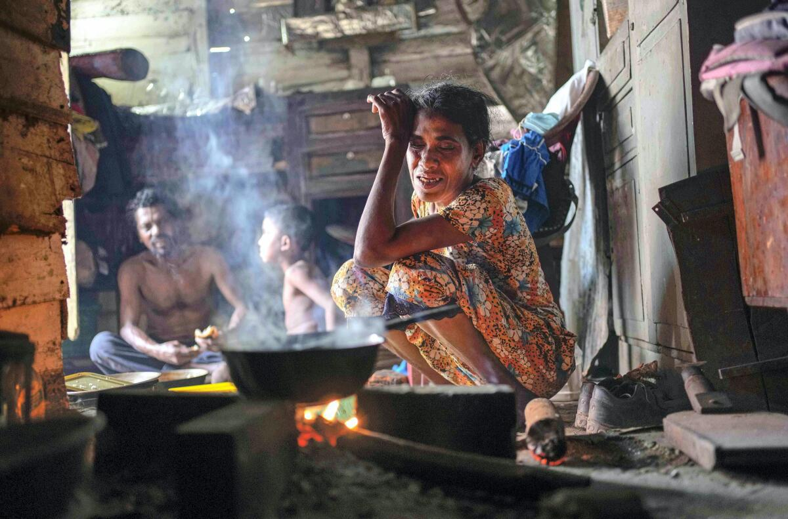
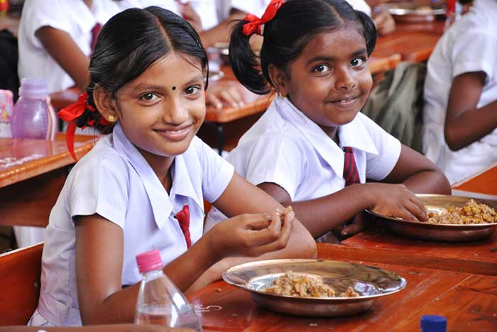

The Causes of Hunger in Sri Lanka
The principal causes of hunger in Sri Lanka stem from economic problems together with political leadership decisions and climate-based catastrophes. The economic hard times of the country resulted in short supply and rising prices for fundamental necessities which include food. The immediate prohibition of chemical fertilizers by political authorities caused agricultural yields to decrease thereby worsening food shortages. The disruption of farming activities due to climate-related disasters caused food amounts to decrease. Several vortexes of factors have created food scarcity conditions which particularly affect children within families. Solving this crisis demands multiple organizations to work together for economic stabilization and launch sustainable farming strategies and boost emergency preparedness.

Natural Disasters and Hunger in Sri Lanka
Floods droughts along with cyclones often strike Sri Lanka which leads to major damage of agricultural lands and insecure food availability. Both flooding and dry conditions pose major hazards for agriculture infrastructure since they wipe out crops and block transportation routes thus both affect food distribution and erosion of water supplies results in smaller crop yields. The drought of 2017 proved extremely severe for Sri Lanka as it reduced rice cultivation by 40% while 900,000 people faced food insecurity. Harsh weather systems together with cyclones damage agricultural land to such an extent that they create further food shortages which intensify hunger levels. The solution to climate-relate farming challenges can be found by establishing early warning systems and better disaster preparedness measures and climate-resilient farming practices.
Key Impacts
- Floods:The floodwater destroys agricultural fields while forcing people to relocate and disrupts their food distribution networks.
- Droughts:The quantity of water decreases alongside reduced harvests which results in food insecurity.
- Cyclones & Storms:The countermovement destroys agricultural fields which disrupts farming operations and negatively impacts community survival.
FAO - Sri Lanka’s Drought & Food Security, 2017
Political Instability and Conflict
The political instability that has gripped Sri Lanka since 2022 has produced substantial negative effects on food security throughout the nation. The economic crisis of 2022 resulted in a severe national shortage of essential goods including food and fuel throughout the country. The crisis ignited broad demonstrations that made President Gotabaya Rajapaksa and other significant government officials resign. Political instability worsened existing financial problems to create unusually difficult circumstances for obtaining food.
The Janatha Vimukthi Peramuna party leader Anura Kumara Dissanayake became president of Sri Lanka in September 2024 which represented a major political transition. The current leadership must tackle two major challenges including economic recovery together with food security issues.
The International Monetary Fund (IMF) approved the third review of Sri Lanka's $2.9 billion bailout during February 2025 which generated an extra $334 million release. The total economic rescue funds now reach $1.3 billion after the recent payment release by the International Monetary Fund.
The issue of food insecurity continues to affect particular regions even though global food production has shown improvement so it remains necessary to work on political stabilization along with comprehensive food distribution policies to achieve long-term food security.
 WFP - Food Insecurity in Sri Lanka, 2025Climate Change and Its Impact on Food Security
The food security of Sri Lanka faces growing danger from climate change because it interrupts agricultural productivity through temperature increases and unstable rainfall patterns along with severe weather conditions. The farming operations of the country remain highly susceptible to both droughts and floods because seasonal rainfall serves as its primary agricultural water source across Dry and Intermediate Zones. Food shortages emerge from reduced crop yields and affected livestock causing harm to both rural populace and national food supply.
The unpredictable weather patterns alongside both dry spells and floods destroy staple crops including rice and tea thus causing economic losses to farmers while pushing food prices upward. The rise in temperatures leads to both land degradation and lower water supplies for irrigation which in turn restricts farming yields.
 ResearchGate - Climate Risk & Food Security in Sri LankaNature - Climate Change & Food Security in Sri Lanka
Economic Inequality and Hunger
Economic inequality throughout Sri Lanka caused extensive food shortage and hunger throughout the country after the recent economic crisis unfolded. The COVID-19 pandemic together with the economic crisis drove poverty levels higher so that about one-quarter of the population began living below the poverty line making it harder for them to get nutritious food.
Statistical data shows that by July 2022 food insecurity affected 6.3 million people among the 38% of households who encountered moderate to severe food distress.
The current economic situation forces families to cut down their meals and sometimes forego eating altogether while experiencing multiple days of complete fasting.
Lowered household income during the economic decline has created additional barriers to obtain essential food items. Food prices continue to increase because of high inflation rates causing extreme difficulty for low-income families to buy their basic needs. During October 2022 the United States saw acute food insecurity affect 54% of American households which demonstrated the serious extent of the crisis.
Sri Lanka must address economic inequality because this action will help reduce hunger throughout the country. To combat food insecurity the government must implement policies designed for fair economic development combined with safeguarding programs while delivering assistance to vulnerable groups of people.
 WFP - Sri Lanka Country BriefAccess to Education and Hunger Prevention
In Sri Lanka school meal programs help unite education and hunger prevention because they advance both learning outcomes and nutritional health status of students. The meal programs offer vital nutrition to students while protecting them through the safety network which makes them attend classes and lowers the number of students who drop out.
School Meal Programs:Since 2003 the National School Meal Programme runs through World Food Programme (WFP) support to provide nutritious meals at schools that boost educational results and combat food shortage. The Home Grown School Feeding project started in 2020 to connect smallholder farmers with schools for locally sourced fresh food that would benefit students and local farmers.
Challenges and Impact of the Economic Crisis:In 2022 when the economy experienced decline both food prices soared while school meal programs received decreased state funding. Many educational institutions experienced difficulties in sustaining daily meal operations which caused students to avoid classes and heightened their vulnerability to food insecurity problems. The research findings from Save the Children showed that food reduction became necessary for half of all Sri Lankan families.
Community and Government Initiatives:Different groups of stakeholders have provided assistance to children who need help because of these obstacles. Through food drives initiated by teachers and parents and Rise Up School Meal program support many thousands of children receive balanced mid-day meals and milk services. The government has established expansion targets for school meal programs to achieve full primary school coverage by 2026 and secondary school coverage by 2030 using local food sources for economic development.
 Rise Up School MealsSchool Meals Coalition - Sri Lanka